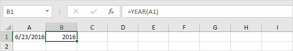

Untuk mendapatkan tahun dari suatu tanggal, gunakan fungsi YEAR.

Gunakan fungsi DATE di bawah ini untuk mengembalikan 1 Januari 2016. Fungsi DATE menerima tiga argumen: tahun, bulan, dan hari.

Rumus di bawah ini mengembalikan hari dalam setahun.

Penjelasan: tanggal dan waktu disimpan sebagai angka di Excel dan menghitung jumlah hari sejak 0, 1900 Januari. 23 Juni 2016 sama dengan 42544. 1 Januari 2016 sama dengan 42370. Mengurangi angka-angka ini dan menambahkan 1 menghasilkan hari dalam setahun. 42544 - 42370 + 1 = 174 + 1 = 175.